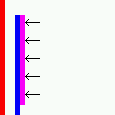

WinIEやNetscapeなどはデフォルトスタイルシートでbody要素にマージンを設定しているが、Operaはデフォルトスタイルシートでbody要素にパディングを設置している。
検証ページ「b059a.html」：
<style type="text/css">
html {
border-left: 5px solid red;
}
body {
border-left: 5px solid blue;
}
p {
border-left: 5px solid fuchsia;
}
</style>
<body>
<p>←</p>
</body>
検証ページではhtml, body, pの各要素に設定したボーダーの位置関係を比べています。
WinIE6.0での表示（標準モード）
Opera7.11での表示（標準モード）
これはデフォルトスタイルシートの違いによる現象で、Operaのバグではありません。
body要素にはマージンとパディングの両方を指定するようにしてください。
Opera6.06、Opera7.11標準モード、Opera7.11互換モードでこの現象を確認しました。